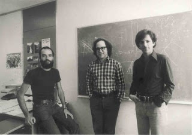
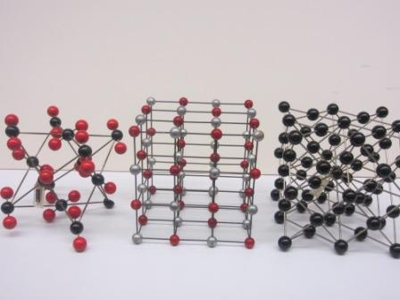
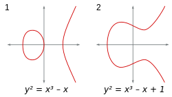

CRIPTOGRAFIA POST-CUÁNTICA
Sobre el conferencista...
Nombre: Lic. Diego Armando Retana García
Egresado: Universidad de Guadalajara
Trabaja en: Relativity 6
Áreas de interés: Criptografía simétrica y asimétrica.
In: www.linkedin.com/in/diego-armando-retana

Ciclo de encriptación.
Criptografía
¿Qué es?
Ciencia que desarrolla técnicas matemáticas para cifrar
información lo cual nos permite enviar mensajes a través de internet.
- Simétrica
- Asimétrica
Es un método criptográfico en el cual se usa una misma clave para cifrar y descifrar mensajes en el emisor y el receptor.
Es el método criptográfico que usa un par de claves para el envío de mensajes. Las dos claves pertenecen a la misma persona que ha enviado el mensaje. Una clave es pública y se puede entregar a cualquier persona, la otra clave es privada y el propietario debe guardarla de modo que nadie tenga acceso a ella.
"Dios creó los enteros, todo lo demás lo inventó el hombre".
RSA
¿Qué es?
Es un sistema criptográfico de clave pública desarrollado en 1977.
Es el primer y más utilizado algoritmo de este tipo y es válido
tanto para cifrar como para firmar digitalmente. Este fue desarrollado
por tres matemáticos.
Ejemplo:
- Https://
- PpayPall

Creadores del sistema criptográfico.
| Tamaño de llaves para RSA | |
|---|---|
| Bits | Dígitos |
| 512 | 154 |
| 1024 | 309 |
| 2048 | 618 |
| 4096 | 1233 |
¿Qué puede hacer un Hacker?
¿Qué es?
Todos conocen la llave pública y factorizando,
se podrá optener la combinación con la que
cual se creará la llave privada y así descifrar el mensaje.

Látices de 3 tres dimensiones.
Látices
¿Qué es?
Una látice o red es un conjunto parcialmente ordenado por
una relación de orden, en el cual cada subconjunto {a, b}
de este, que consta de dos elementos, tiene una mínima cota
superior y una máxima cota inferior.
Se escribirá la mínima cota superior del conjunto {a,b}
como m.c.s({a, b}) y se denotará por "a + b". SimiIarmente
se escribirá la máxima cota inferior del conjunto {a, b}
como M.C.I({a, b}) y se denotará por "a. b".
Curva Elíptica
¿Qué es?
Es una variante de la criptografía asimétrica o de clave pública
basada en las matemáticas de las curvas elípticas. Sus autores
argumentan que la CCE puede ser más rápida y usar claves más cortas
que los métodos antiguos (como RSA) al tiempo que proporcionan un
nivel de seguridad equivalente.

Curva elíptica.
Fotos de la conferencia

Respondiendo preguntas.
Con la banda.

Entregando presente.
Consejo e invitación
Consejo: Para toda investigación recurrir a la documentación y no a foros.
Invitación: Estudiar una Maestría y, ¿porque no mejor en el CINVESTAV?.